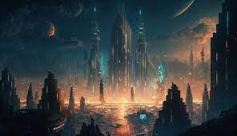

>Fiction
There are several purposes for fiction, including entertaining, inspiring, informing, and persuading the audience.
Mystery: Mystery novels provide readers with plots that explore mysteries from beginning to end. One of the main characters in a mystery is typically a detective or a private investigator who solves the mystery with the reader.
Historical fiction: Historical fiction uses real-life events to support its plots and key details. A work of historical fiction engages readers by retelling a historical event in creative ways that alter minor details, such as characters' names or the setting.
Fantasy: Mythology and ancient folklore are some sources of inspiration for fantasy novels. Fantasy novels usually depict imaginary settings, beings, and universes that are nonexistent in the real world.
Romance: Love stories are the dominant theme of romance novels. Although romance is also a prominent element of other forms of fiction, romance novels emphasize the development of a romantic relationship.
Science fiction: There are several themes that are characteristic of science fiction, including space exploration, futuristic species, and time travel. Most of the stories revolve around scientific concepts, such as physics, astronomy, anthropology, chemistry, and astrophysics.